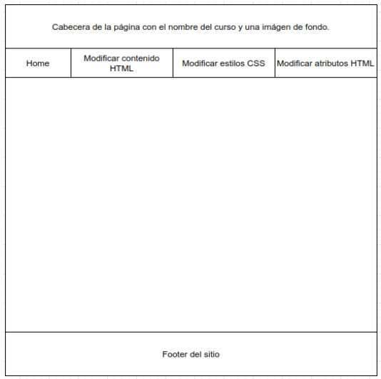

Un client encarregat de realitzar formacions a empreses ha decidit crear un curs nou per poder ensenyar JavaScript aplicat a interaccions amb elements HTML. La seua idea és que el producte final tinga un aspecte similar al següent esquema:
L'objectiu és mostrar com funciona Git en un entorn de treball col·laboratiu i com s'utilitzen diferents branques per gestionar les versions del codi.
El nostre equip de programadors està compost per tres persones, amb les següents responsabilitats:
Git és un sistema de control de versions que permet gestionar els canvis en el codi i col·laborar entre programadors. Facilita mantindre un historial de modificacions, revertir errors i treballar sense conflictes.
Git Flow és una metodologia de treball que organitza el desenvolupament en diferents branques:
L'usuari 1, el més experimentat, crea el repositori del projecte i segueix els passos de la metodologia Git Flow:
git clone https://github.com/Llorens19/Practica_Git.git
git flow init
git flow feature start estructura_usuari1
git flow feature finish estructura_usuari1
git push --set-upstream origin develop
Resultat de la fusió de les branques:
L'usuari 2 s'encarrega de crear dues features, una per a "Modificar contingut HTML" i una altra per a "Modificar atributs HTML". Els passos són:
git pull origin
git flow feature start seccion_modificar_contingut_html
git flow feature finish seccion_modificar_contingut_html
git flow feature start seccion_atr_html_usuari2
L'usuari 3, encarregat dels estils CSS, crea una feature per afegir la seua part del codi i després llança la release:
git flow feature start seccion_css_usuari3git flow feature finish seccion_css_usuari3
git flow release start v1.0
git flow release finish v1.0Després que l'usuari 2 completara el seu treball, l'usuari 1 realitza millores a la secció creada per l'usuari 2 mitjançant un hotfix:
git flow hotfix start milloresV_1_0git flow hotfix finish milloresV_1_0Finalment, el projecte ha de publicar-se en GitHub Pages, on s'inclourà tota la documentació del procés, l'ús de Git Flow, commits i branques.
git checkout -b gh-pages